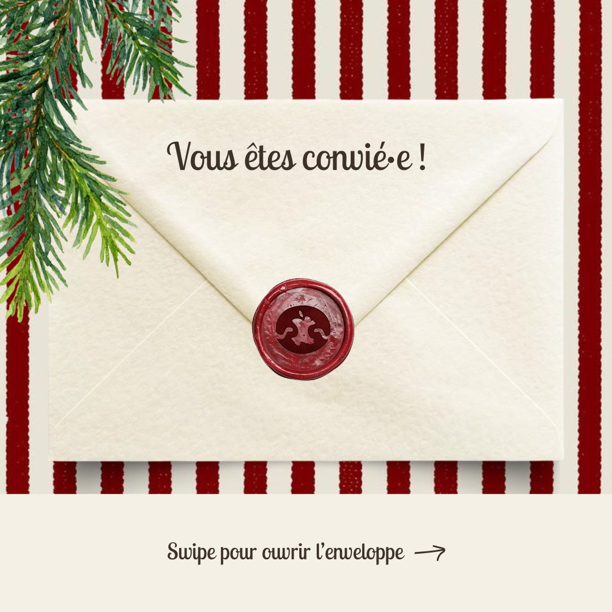
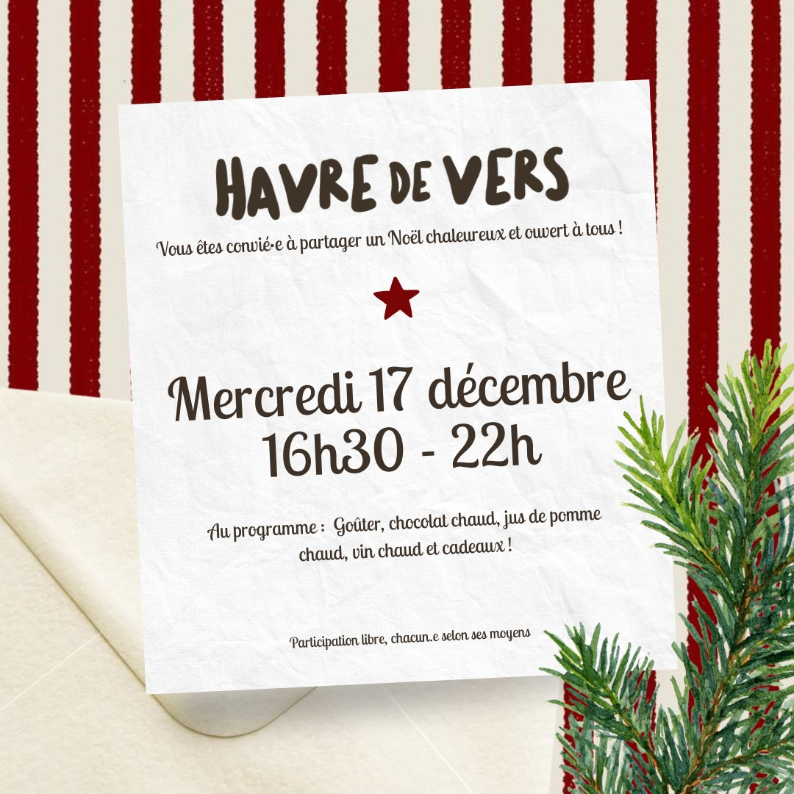
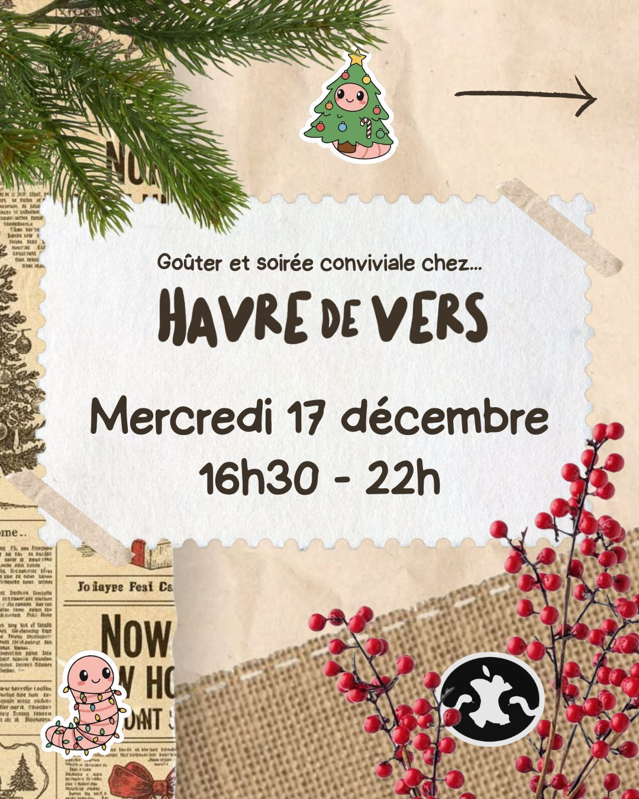
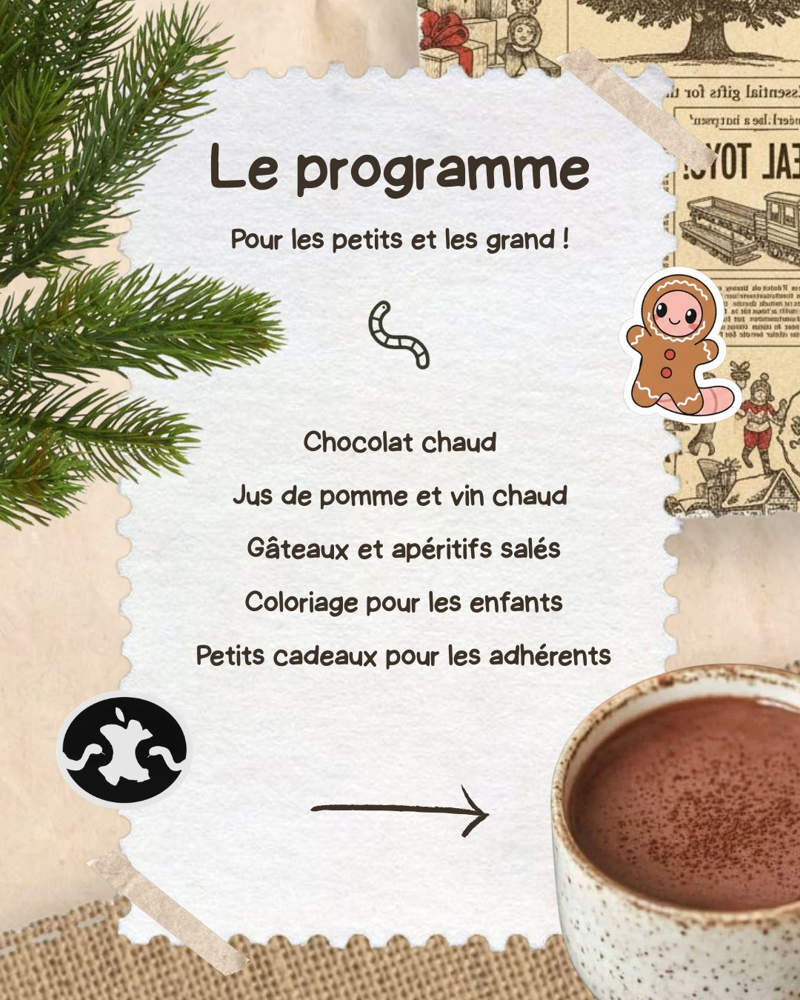
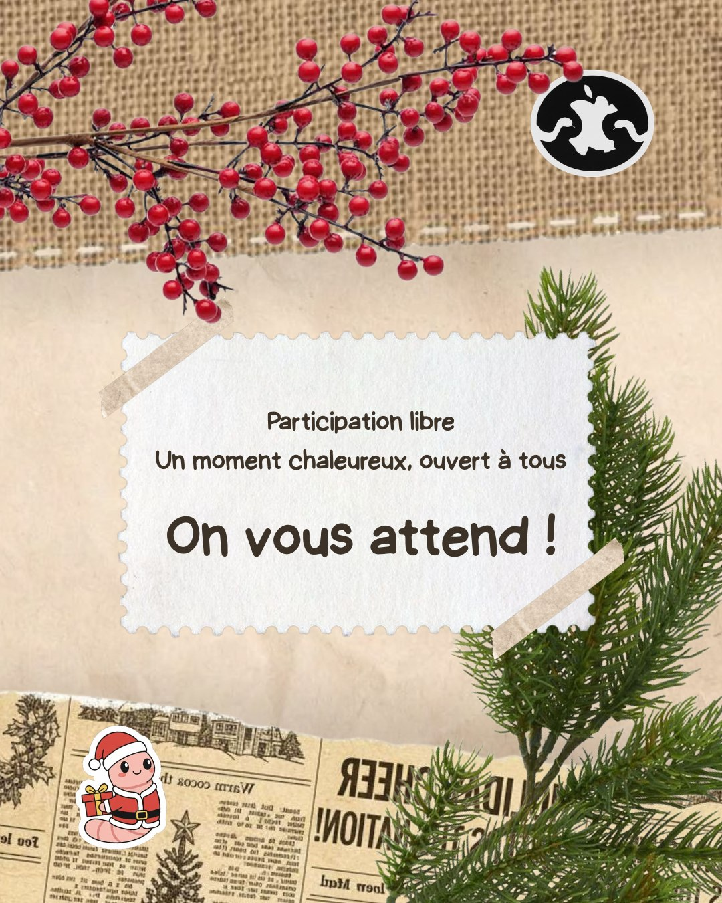
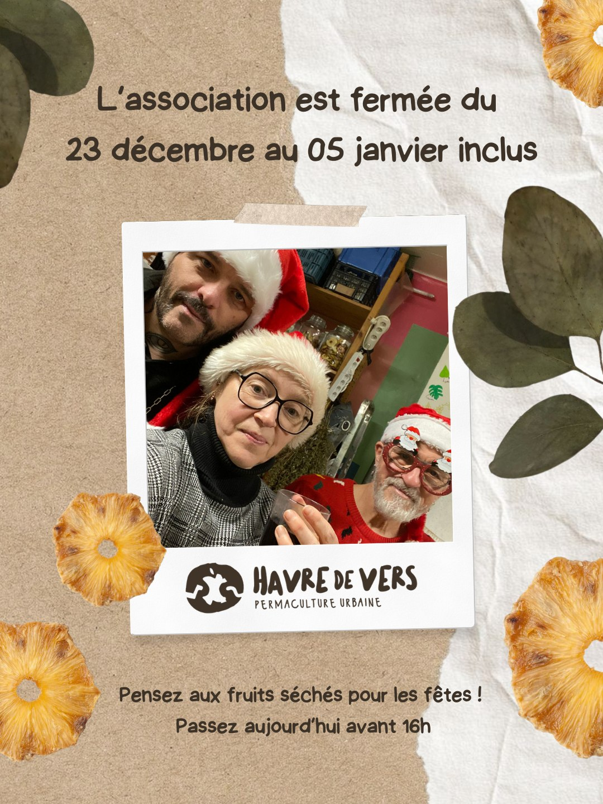
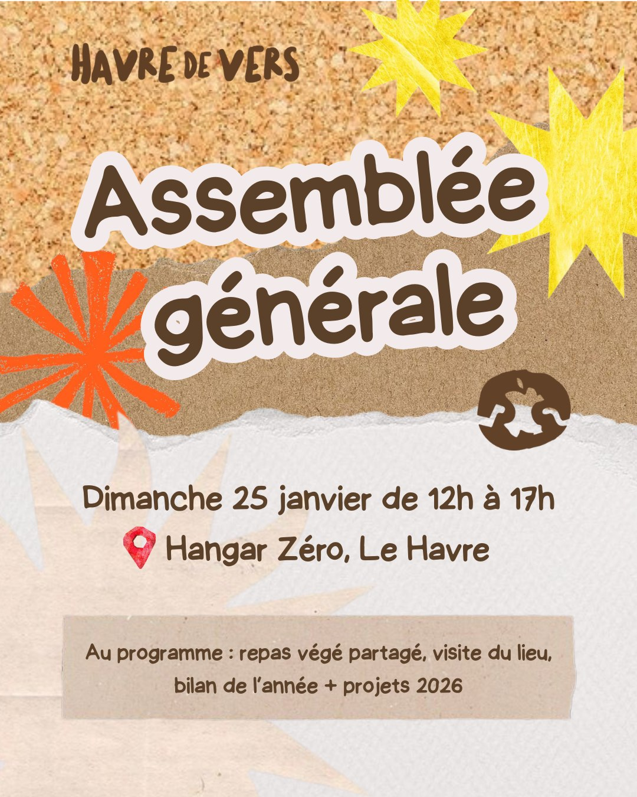
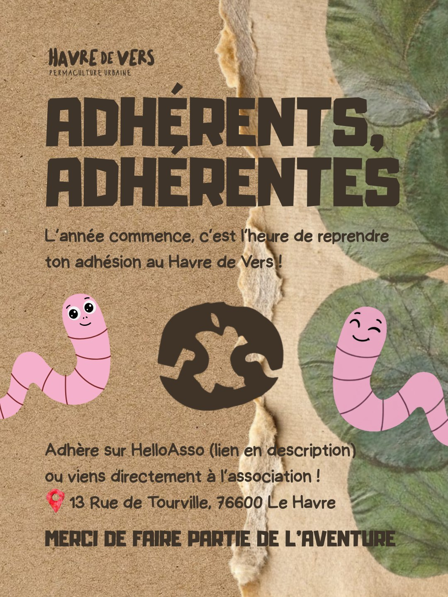
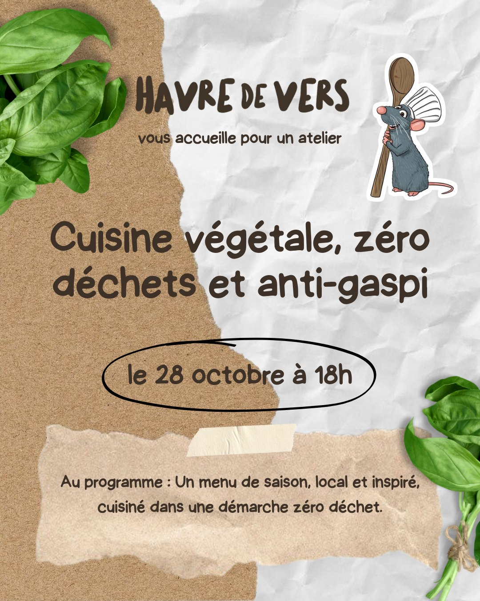

← Tous les projets

Réseaux sociaux
Havre de Vers
Ici, on voit la vie en vers
Une association havraise de permaculture urbaine, pour laquelle j'ai créé bénévolement une série de publications Instagram. Un vrai client, un vrai compte, de vraies contraintes.
Le client
Une association, pas une marque
Havre de Vers est l'association havraise qui accompagne à la valorisation des biodéchets. Concrètement : de la permaculture urbaine, du compostage, et des ateliers ouverts à tous, des bombes de graines aux buttes en lasagne, de la cuisine végétale au tag végétal, jusqu'à l'éveil permacole pour les enfants. Leur devanture, rue de Tourville, annonce la couleur avant même d'entrer.
Prendre soin des êtres vivants
La permaculture comme mouvement humaniste, pas seulement comme technique de jardin.
Prendre soin de l'environnement
Les ressources de la planète sont abondantes mais finies : elles se protègent.
Partager son temps
De l'assiette au jardin et du jardin à l'assiette, en redistribuant les surplus.
La mission
Du bénévolat, avec de vraies contraintes
Le fonctionnement était simple et concret. L'association me disait ce qu'elle voulait annoncer, un atelier, un événement, une information pratique, parfois avec des exigences précises, parfois en me laissant la main. Je proposais, ils validaient ou non, et je reprenais jusqu'à ce que ce soit juste pour eux.
C'est la différence entre un exercice d'école et un vrai client : le visuel ne part pas parce qu'il me plaît, il part quand il convient à quelqu'un d'autre, qui connaît son public mieux que moi.
Les publications
Six publications pour leur compte
Un même parti pris relie les six : une ambiance scrapbooking, faite de papiers, de découpes et d'éléments rapportés, qui va bien à une association de terrain et s'éloigne du visuel trop lisse. Deux constantes à chaque publication, quel qu'en soit le sujet : le logo présent, et les informations importantes lisibles du premier coup d'œil, date, lieu, sujet. Le reste est libre.
Outils










Le mot de la fin
Ce que le projet m'a appris
Travailler pour une association, avec ses contraintes et surtout des délais souvent très courts. On ne peut pas se permettre de chercher longtemps : il faut proposer vite, accepter les retours, corriger, et livrer quelque chose de propre dans le temps disponible. C'est une façon de travailler très différente d'un projet d'école, où le temps est cadré et les retours viennent à la fin.
Projet suivant